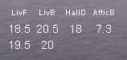
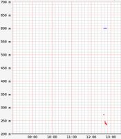
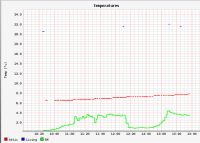

I am at my wits' end with the RRD4J. I implemented the eavample from the RRD4J tutorial. On my webconsole I do get an image, but the data points are missing. I have gone through the forums and found several similar reports. I described the case here in my private space in more detail.
I would appreciate if someone more experienced with RRD4J would have a look at it. It is likely something stupid, but after more than a day I still don't see it.
Thanks
Pieter
{kind=link}
{kind=link}
{kind=link}
|
Hi Pieter, Just a basic question. Have you verified that your temperature sensors are returning a value?? If you link then to a label you can see the temperature readings? Regards Stavros |
|
 Thanks for the response Stavros Yes the temperatures do show the correct values. What puzzles me at the moment is the vertical temperature axis. It presently is from 0.0 - 1.0. How can I influence that scale? Or is it automatic. edit: I am logging the 19.5 and 7.3 sensors from the image Pieter |
|
Hi Pieter again, From my experience the temperature scale changes automaticaly. If you are getting a range from 0.0 to 1.0 it may be because you do not have any readings loged durring the period that you have specified in the RRD4J command. Change the "end time" to 20140227-23-00" and see if you get any readings. If you do then the best way is to complete the how to RRD4J and use the comands for dynamically changing the graphic timeframe. Try it out and let me know if this helps. Stavros |
|
Earlier this morning I already had changed. |
|
 Made a little progress here. I did replace the 7.3 degrees C sensor with a virtual in memory command based sensor that represents my solar power level. After a while I did notice two short traces one for the temperature the other for the power. Gave a nice scale from 0 - 20. No units IIRC. I'll investigate the temp sensors a bit more to see what could be bugging me there. |
|
I noticed that the verical axis has changed during the day. It now shows values from 0.0-1.7 without the m!. That is what I expected. My next step is to define a second graph. I therefore copied the rrd_graph_def in which I adapted the parameters. I don't know if that is allowed. It is very unprofessional that the official XML schemas still are not in their proper place: xsi:schemaLocation="http://www.openremote.org http://www.openremote.org/schemas/rrd4j.xsd">
So I can not formally check what is allowed. |
|
 I now understand a bit more why I did not see data appearing in my graph. With the example graph the RRDtool apparantly only displays data points when the signal changes.
|
{kind=link}
{kind=link}